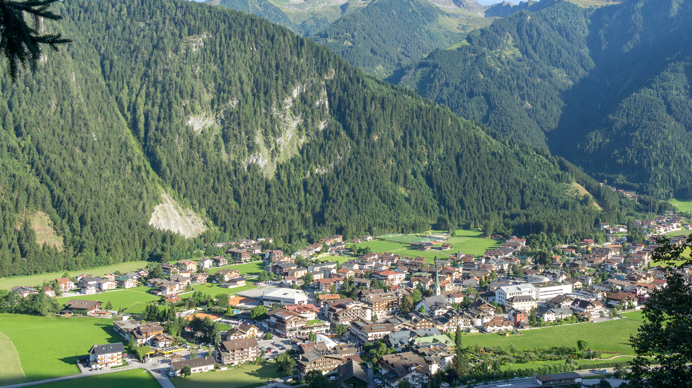
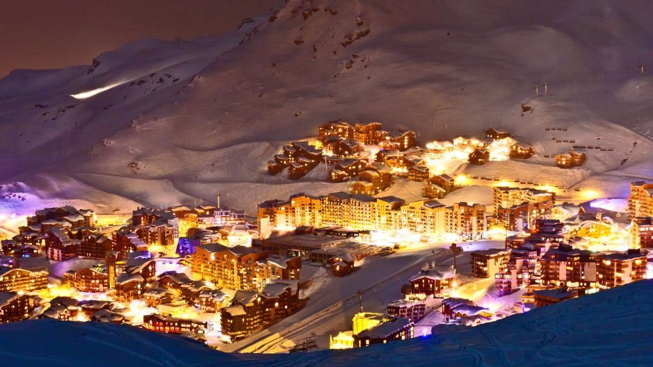
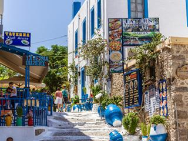

Movie
Als het leven ergens in het Zillertal bruist, dan is dat wel in Mayrhofen. Het dorp is eigenlijk een verzameling van verschillende kleinere dorpen die uiteindelijk samen uitgegroeid zijn tot een wintersportbestemming met flair. Al van oudsher wordt hier de wintersport beoefend en dat ademt dit sfeervolle dorp ook uit. De bebouwing is in landelijke Alpenstijl uitgevoerd, waardoor Mayrhofen nog altijd een gemoedelijke sfeer uitstraalt. Niet voor niets is het gezellige Mayrhofen al sinds tientallen jaren bij Nederlanders een populaire wintersportbestemming.

Val Thorens is het hoogst gelegen Franse skidorp en de dorpskern ligt op 2300 meter! Hiervandaan starten vele liften die je naar nog hoger gelegen pistes vervoeren. Het dorp Val Thorens ligt in het gelijknamige skigebied Val Thorens. Samen met de skigebieden van Les Menuires, Méribel en La Vallée de Courchevel wordt het immense aaneengesloten skigebied Les Trois Vallées gevormd.

In de Egeïsche Zee, voor de kust van Turkije, ligt het schitterende eiland Kos. Kos is onderdeel van de Dodekanesos-eilandengroep en één van de meest veelzijdige Griekse eilanden. Door de heerlijke stranden prima uitgaansgelegenheden en karakteristieke Griekse cultuur is vakantie naar kos een fantastische keuze! Kos is een vakantiebestemming waar je gegarandeerd een uitstekende vakantie zult beleven.

Cookie statement